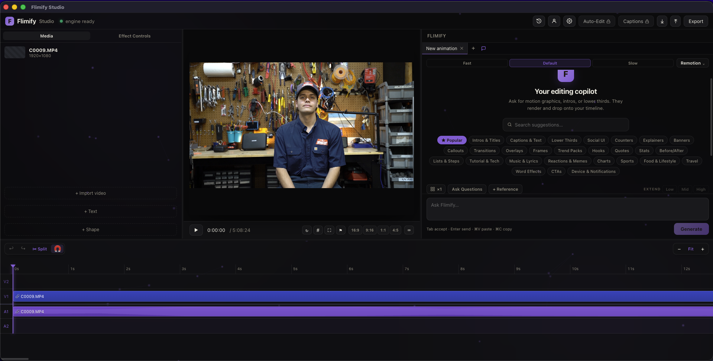

Desktop app
The whole editor on your Mac or Windows. Runs on your own Claude, so it's free to run.
Free. Mac (Apple Silicon) or Windows, one click. Try in browser →

Generate
Auto-Edit Studio
Captions Studio
How it works
Three steps from a raw clip to a render that matches your preview exactly.
Drag a video in or import it, and it lands on the timeline with its audio split onto a linked track you can move and mute.
Ask Flimify for graphics that render onto your tracks, then trim, keyframe, grade, add transitions, and caption with the pro timeline.
Render the timeline to an mp4 that matches your preview exactly, then download it from the desktop app or the browser.
Questions
No. Generation runs on the Claude CLI already installed on your machine, so there is no API key to set up and no per-render fee. If you already have a Claude subscription, it is free to run on it.
You describe motion graphics like intros, lower thirds, and animated overlays, and Flimify builds, renders, and drops them onto your timeline. You can request several versions of one prompt, ask for changes on any render, and queue prompts to run in sequence.
The free plan lets you edit on the full timeline and export, with a limit of 10 renders per month. Auto-Edit and auto-captions are part of the Studio plan.